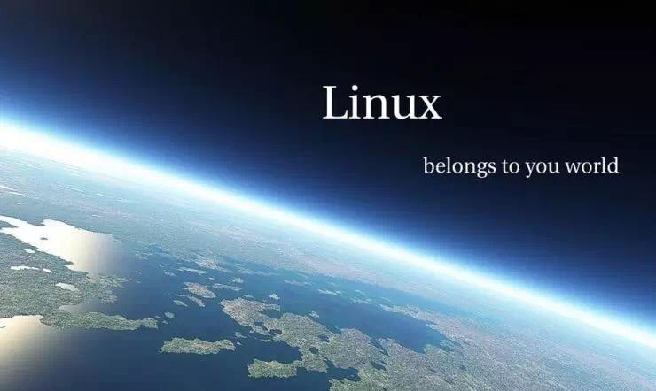
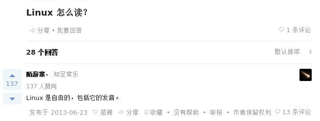
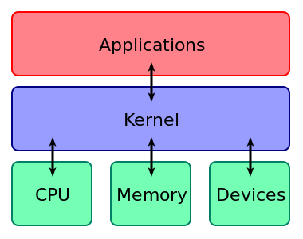

Linux怎么读

概述
-
授课目标
教授大家基础的linux系统知识
-
课程设置
历史，安装，常用命令，常用软件，进阶方向
-
上课方式
主要是实战操作演示，网页的课件只是为辅助
简单说说历史
{kind=link}
unix-like与POSIX规范
类Unix系统
指各种传统的Unix系统（比如FreeBSD、OpenBSD、SUN公司的Solaris）以及各种与传统Unix类似的系统（例如Mi nix、Linux、QNX等）。它们虽然有的是自由软件，有的是商业软件，但都相当程度地继承了原始UNIX的特性， 有许多相似处，并且都在一定程度上遵守POSIX规范。
POSIX规范
#include "pthread.h" //在Linux下编写多线程程序需要包含的头文件
POSIX线程（POSIX threads），简称Pthreads，是线程的POSIX标准。该标准定义了创建和操纵线程的一整套API。在类Unix操作系统（Unix、Linux、Mac OS X等）中， 都使用Pthreads作为操作系统的线程。Windows操作系统也有其移植版pthreads-win32。
GNU与GPL
- Gnu is Not Unix
- 由Richard Stallman在1983年9月27日公开发起的。它的目标是创建一套完全自由的操作系统。Richard Stallman最早是在net.unix-wizards 新闻组上公布该消息，并附带《GNU宣言》等解释为何发起该计划的文章，其中一个理由就是要“重现当年软件界合作互助的团结精神”。为保证 GNU软件可以自由地“使用、复制、修改和发布”，所有GNU软件都有一份在禁止其他人添加任何限制的情况下授权 所有权利给任何人的协议条款，GNU通用公共许可证（GNU General Public License，GPL）。即“反版权”（或称Copyleft）概念。
林纳斯·托瓦兹
著名项目
- linux内核
- git
时代杂志2000年，在时代100人:本世纪最重要的人物,位居第17名
“Talk is cheap. Show me the code.”
Just For Fun
理查德·斯托曼
GNU
- GCC
- EMACS
- Bash
政治活动家，为自由软件辩护，对抗软件专利及版权法
若为自由故
和windows的比较
-
各有所擅长
-
windows
强大的图形界面
娱乐和文档处理
-
Linux
服务器
各式开发软件最早支持(开源生态发展良好)
Linux的一些特性
优越的包管理器
七周七语言
- ruby
- prolog
- scala
- io
- erlang
- clojure
- haskell
在Linux配置安装已经配置环境－
- sudo pacman -S swi-prolog ghc ruby erlang clojure io scala
在windows下配置。。。。。
高度自由和透明-得益于开源
学习操作系统必备
没有流氓软件,安全
举个例子，权限
发行版本与内核
严格来讲，术语Linux只表示操作系统内核本身，但通 常采用Linux内核来表达该意思。Linux则常用来指基于Linux内核的完整操作系统，包括GUI组件和许多其他实用工具。
各个公司或者是组织或者是个人定制内核,然后配上软件，开始发行。
发行版本
- debian系
- Ubuntu
- Linux Mint
- Kali Linux
- redhat系
- CentOS
- Fedora
- ArchLinux
- OpenSuse
- Gentoo
- freebsd
认一认Logo

为什么要学习Linux
信仰
加深对一些东西的理解
(比如加深对环境变量的理解)扩展发展方向 虚拟化,大数据，后端，运维，kernel等
命令提示符
dir:显示磁盘目录文件
cd:转换当前目录
ping:一种快速查看自己有没有网的方法
ipconfig:查看ip相关
作业
第一周主要内容不多，主要是让你们了解Linux，所以作业也没啥。 WEEK 1作业：下载PuTTY并使用PuTTY远程登录我们在网站上提供的两个服务器(随便哪个服务器都可以)， 然后输入些什么。把你输入的输出的内容复制，贴到这个作业提交网站提交给我们就好了。 推荐输入的内容：uname -a和pwd和cat example(这三个都试一下)
多看看主页，我们会放一些通知上面
书的话，还是推荐鸟哥的私房菜,重点还是自己多练习命令
/